InputMultilingual mention + image
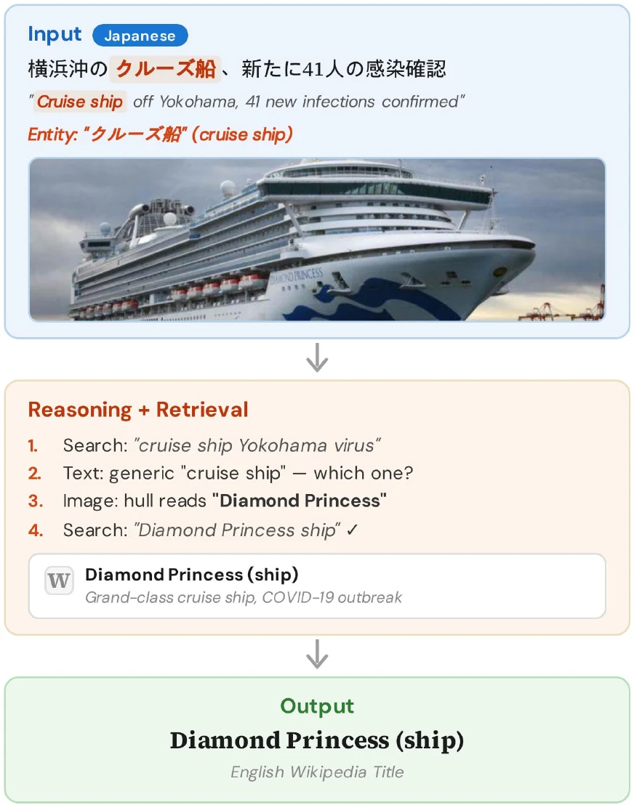
Image clue:“Diamond Princess”
Multimodal entity linking grounds entity mentions in text and images to knowledge-base entries. These systems degrade on rare entities, but prior work measures rarity primarily through popularity-based metrics such as pageviews. We broaden this view using knowledge-graph structural metrics that capture how well an entity is documented and connected. These metrics identify many rare entities that popularity metrics miss. Across the resulting rare-entity slices, state-of-the-art accuracy drops by 15.4–39.9%, showing that different rarity definitions expose different failure modes. To address these failures, we introduce a simple, training-free framework in which a reasoning-capable vision-language model iteratively searches and reasons over Wikipedia, gathering evidence dynamically. Controlled experiments show that reasoning and retrieval are complementary. Reasoning alone does not significantly improve accuracy on rare entities. Retrieval without reasoning improves rare-entity accuracy but can hurt overall accuracy. Their combination performs best. On MERLIN, a multilingual multimodal entity linking benchmark over five languages (Hindi, Indonesian, Japanese, Tamil, Vietnamese), our best system improves over the state of the art by 6.9% overall and by up to 23.3% on rare-entity slices. We release MERLIN-Rare, rare-entity test slices for targeted evaluation, with our framework.
Prior work usually defines rare entities with popularity signals such as Wikipedia pageviews or incoming links. Popularity is only one dimension of rarity. An entity can receive attention but still have little structured or cross-lingual information. Limited documentation reduces the available textual evidence. Sparse knowledge-graph structure provides fewer relations, and low cross-lingual coverage makes it harder to connect a source-language mention to an English knowledge-base entry.
We study 15 metrics. Nine Wikipedia metrics measure attention and documentation through pageviews, backlinks, article size, revisions, editors, categories, external links, references, and images. Six Wikidata metrics measure structure and cross-lingual coverage through incoming links, outgoing links, language editions, statements, qualifiers, and entity age. An entity is rare on a metric when its value falls in the bottom 5% of the test-set distribution.
Different metrics identify different tails. Their bottom-5% sets overlap by only 37% on average, and some pairs overlap by only 10%. This means that popularity-only evaluation leaves many poorly documented or structurally sparse entities untested.
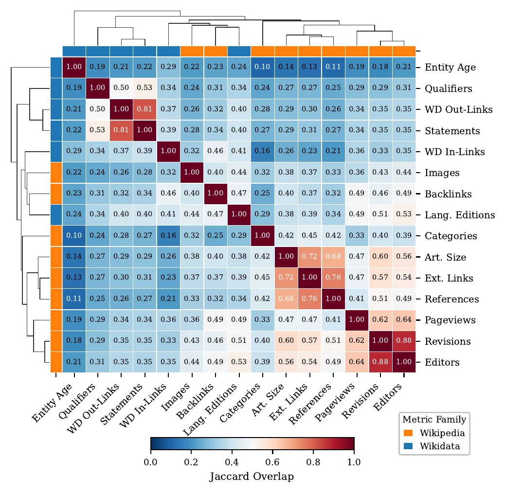
On the current state-of-the-art Cultural Pangea model, accuracy drops by 15.4–39.9% across these slices. The drop is 37.7% for pageviews and 37.0% for Wikidata statement count, even though those metrics identify largely different entities. The effect is also not created by the 5% cutoff. Accuracy declines smoothly toward the sparse end, and the main results remain stable with 1%, 5%, and 10% thresholds.
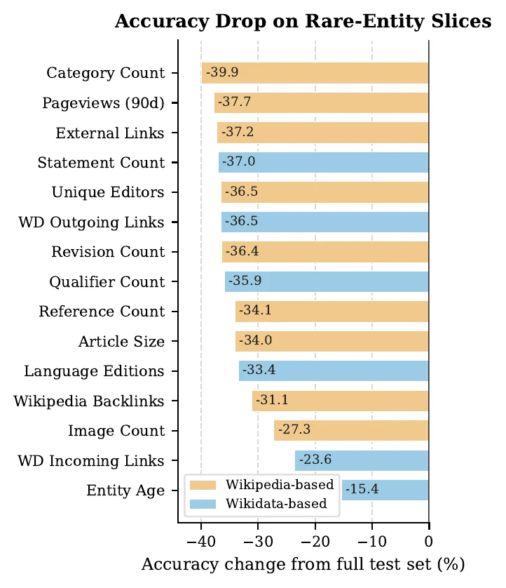
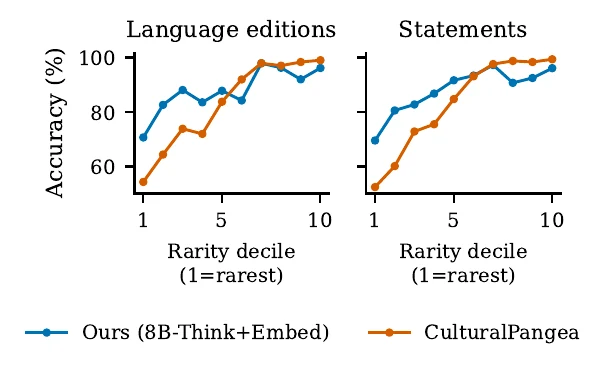
Our framework is training-free. A vision-language model reads the image, text, and mention, searches Wikipedia, incorporates the returned snippets, and decides whether to search again. Unlike methods that rerank a fixed candidate set, each search can depend on the evidence returned by earlier searches.
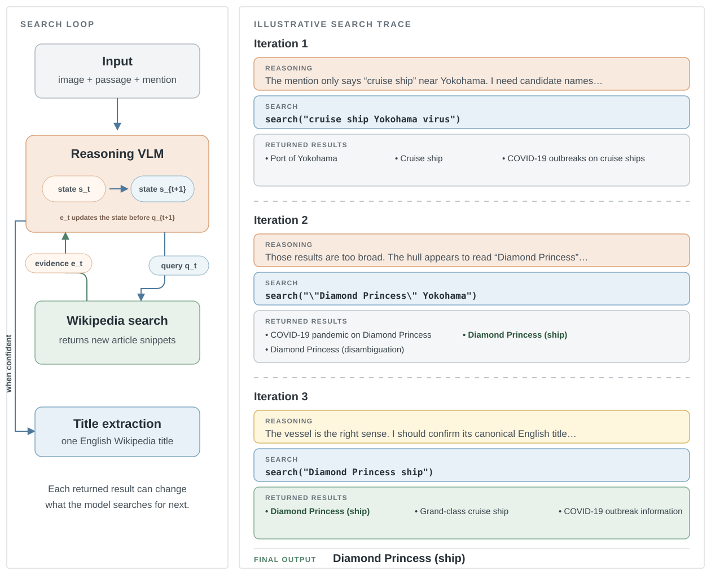
We force the first search in every retrieval configuration because the 2B models often answered without calling the tool, even when instructed to search. After that first call, the model decides whether and how to continue. It can make up to 20 retrieval calls. A second pass reads the complete reasoning trace and returns only the final Wikipedia title.
Controlled experiments with matched Qwen3-VL variants separate the effects of reasoning and retrieval. Reasoning alone does not significantly improve accuracy on rare entities. Retrieval improves rare-entity accuracy, but it can hurt overall accuracy when the model does not deliberate over the returned evidence. Their combination performs best.
| Model | No retrieval | Embedding retrieval |
|---|---|---|
| Instruct | 83.5 | 82.9 |
| Thinking | 84.2 | 87.9 |
The matched Qwen variants establish this controlled interaction. GLM-4.6V-Flash provides a narrower check. With its thinking mode, retrieval improves all 15 rare-entity slices, but its non-thinking mode cannot reliably sustain the search loop. The GLM result supports the benefit of reasoning with retrieval on rare entities, but it is not a complete replication of the four-way Qwen comparison.
On MERLIN, our best system reaches 87.9% average accuracy across Hindi, Indonesian, Japanese, Tamil, and Vietnamese. This is +6.9% over Cultural Pangea. The advantage grows on rare entities, reaching +23.3%. Fourteen of the 15 rare-slice gains are larger than the full-test-set gain.
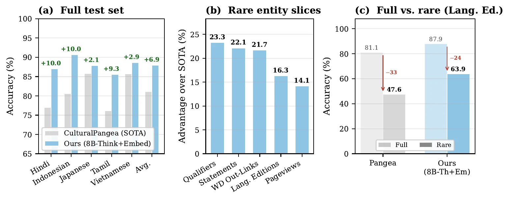
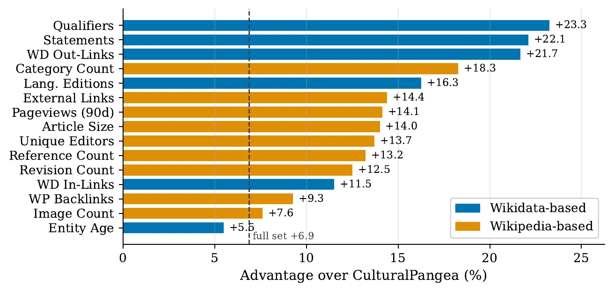
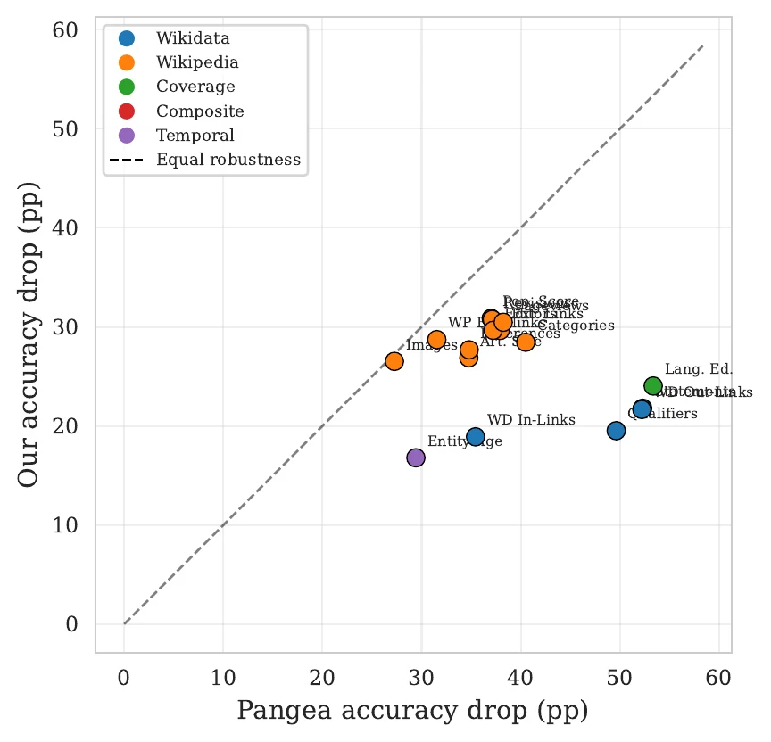
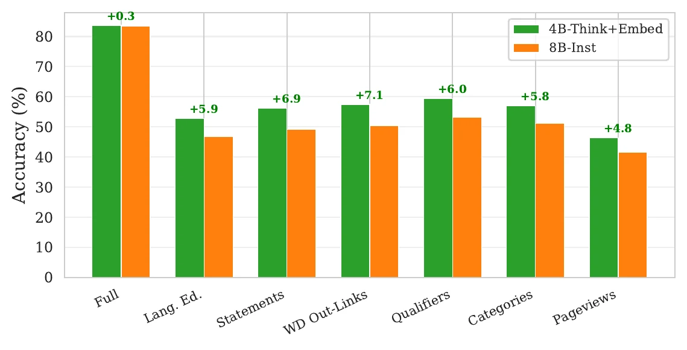
Embedding retrieval finds the target early, and the second search is often the most useful refinement. Later calls have sharply diminishing returns. Thinking models usually stop after one or two searches and spend more time reasoning between calls. Instruct models continue searching, even as their queries become less diverse and more repetitive.
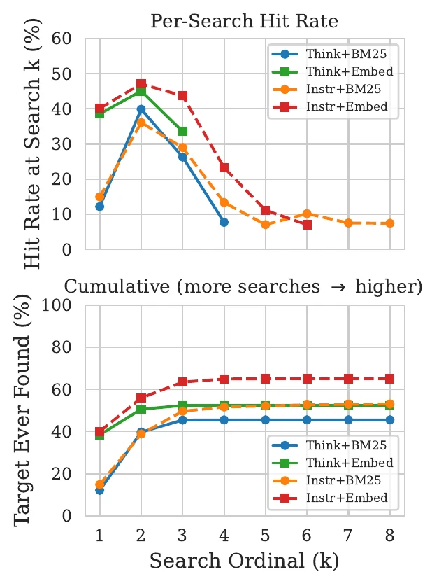
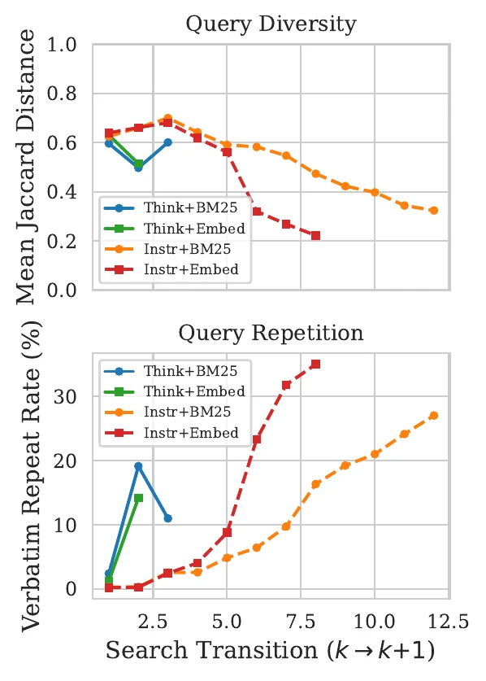
MERLIN-Rare is the union of the 15 rare-entity slices used in the paper. It contains 1,105 entity mentions, 790 unique images, five languages, and 105 prediction sets. Each example includes its rarity metrics, percentiles, slice flags, and the corresponding model predictions and traces.
The dataset is available on Hugging Face. The repository guide describes the files and evaluation scripts.
from datasets import load_dataset
dataset = load_dataset(
"neulab/merlin-rare",
"hi",
split="test",
)
structurally_sparse = dataset.filter(
lambda row: row["rare_language_editions"]
)@article{pengpun2026think,
title = {Think Before You Link: Rarity, Reasoning, and
Retrieval in Multilingual Entity Linking},
author = {Pengpun, Parinthapat and Khanuja, Simran and
Neubig, Graham},
year = {2026}
}We thank Ibrahim AlRayes for his help with this project, and Jean de Dieu Nyandwi and Zaid Sheikh for sharing resources that supported this work. We also thank the members of NeuLab for their helpful feedback.
This work was supported in part by a research grant from the Defence Science and Technology Agency (DSTA), Singapore.